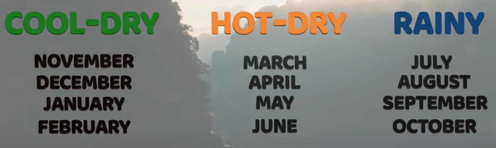
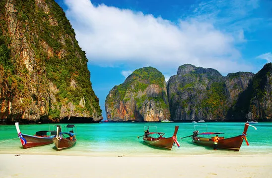
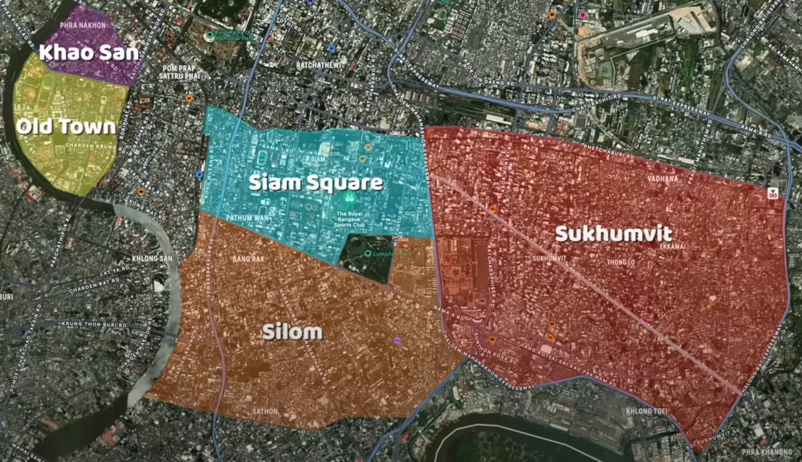
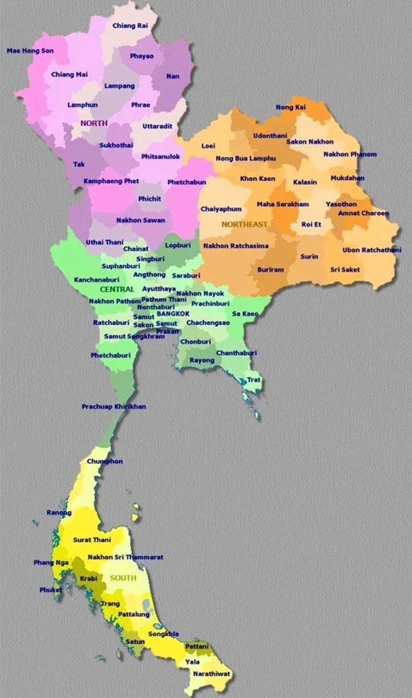

Thailand
Activities
- Central/Bangkok - city and history vibes:
- Siam Square for most lively and shopping
- Sukhumvit for bars, restaurants, shopping centers, and more
- Khao San for night life
- Old Town for historical sights and temples
- Silom for rooftop bars, street vendors, sidewalk stores
- Hike and Swim - Erawan Waterfalls, Khao Yai National Park
- Temples and Shrines
- Wat Phra Kaew (The Grand Palace)
- Wat Pho Phra
- Phraya Nakhon Cave and Temple
- Watch a Thai FC match ⚽️
- Northern/Chiang Mai/Chiang Rai:
- Thi Lo Su (7-tiered) Waterfall
- Doi Inthanon National Park
- Chai Lai Orchid - Elephant Sanctuary
- Temples and Shrines
- Chiang Mai
- Wat Phra Singh Woramahawihan
- Wat Chiang Man
- Wat Chedi Luang
- Wat Phra That Doi Suthep
- Chiang Rai
- Blue Temple
- White Temple
- Chiang Mai
- Southern/Phuket - beach, nature, and island vibes:
- West - Phuket, Phi Phi Islands, Krabi
- Phang Nga Bay / James Bond Island
- Khao Sok National Park, Cheow Lan Lake, and Elephant Hill
- Big Buddha @ Chalong, and a great view of Phuket
- Bang La Road in Pa Tong - nightlife, bars, shisha, ping pong show lol and more
- Old Town to eat, shop, and explore
- Rassada Port/Pier can shuttle us to the Ko Phi Phi Islands. Visit Maya Bay via long tail boat tour. Sample activities include beach, caves, and snorkeling. Sunset at "Viewpoint 3" and watch a fire show on the beach
- East - Ko Tao, Kho Samui, Ko Pha Ngan
- Ang Thong Marine National Park
Fly out of Phuket Intl Airport
Fly into Bangkok Intl Airport
Fly into Chiang Mai Intl Airport
Fly out of Chiang Mai Intl Airport to Phuket
It may be wise to book drivers or tour guides to do the heavy lifting on transit or travel to inter-region destinations.
Food 🔥
- Chinatown
- Old Town(s)
- Jodd Fairs Night Market
- Restaurants (mall and street food)
- Rooftop Bars: Sky Bar at Lebua, Tichuca Rooftop Bar, Red Square Rooftop Bar, Aire Bar, Char Bangkok, Octave Rooftop Bar, King Power Mahanakhon Skywalk, Eagle Nest Rooftop Bar
- Floating Market and Railway Market
Food is quite cheap (<$6 for pad thai or boat noodles) should not be a problem anywhere, but here are some examples:
Lodging
- Carlton Hotel in Sukhumvit for one room is ~$136-$151 per night. Two (or more...?) people sharing a room would be ideal and save on cost. Most mid-luxury hotels seems to be in the range of ~$130-$300 per night if booked early enough.
- Luxury villas in Phuket, Krabi, Koh Pha-Ngan, and Ko Samui offer spaces for upwards of 18 people for $700-$2500/night (total cost), many of which offer an included private chef.
Transit
- River taxi
- BTS Skytrain
- Tuk tuk
- Bus
- Taxi
- Plane
Cost
- Flight (from SFO to Bangkok):
- Lodging:
- Placeholder
- Transit
- Placeholder
- Total (est. range): Placeholder



